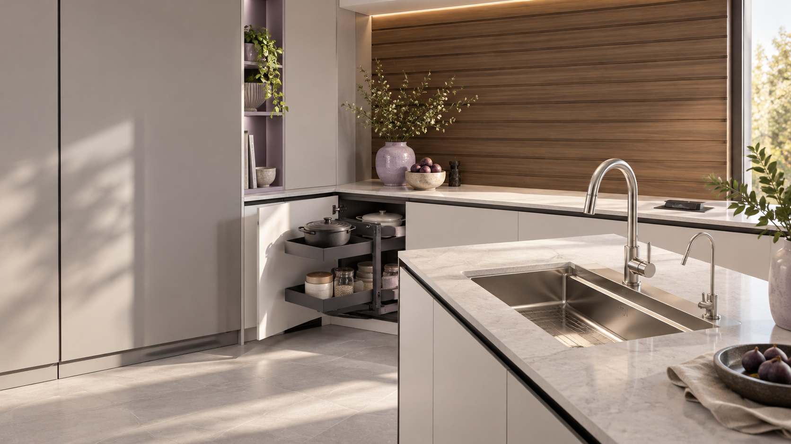

HERRAJES & SOLUCIONES DECORATIVASUn espacio para vivir.
Un espacio para vivir.
Detalles para hacerlo tuyo.
Texturas, organización y funcionalidad que transforman tu cocina y tu hogar.
Explora el catálogoHerrajes·Cocinas·Revestimientos·Espacios que funcionan
UN DETALLE. MUCHAS POSIBILIDADES.
Encuentra tu próxima idea.
Soluciones que conectan lo práctico
con tu forma de habitar.
EXPLORA POSH
El detalle que buscas.
TU PROYECTO EMPIEZA EN LOS DETALLESHablemos de
Hablemos de
tu próximo espacio.
Consulta características y disponibilidad de nuestros productos con el equipo POSH.
Contactar en Instagram@posh.herrajes